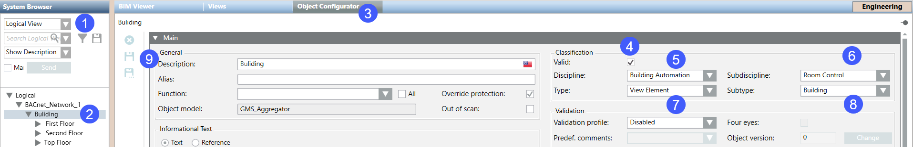

Modify Building
- Select Logical View > [subsystem name] > [building name] > [floor].
- Select the Object Configurator tab.
- Select the Main expander.
- In the Classification section, do the following:
- Select the Valid check box.
- Select Building automation from the Discipline drop-down list.
- Select Room automation from the Subdiscipline drop-down list.
- Select View element from the Type drop-down list.
- Select Building from the Subtype drop-down list.
NOTE: Permitted subtypes: Campus, building, section, area, floor. - Click Save
 .
. - Repeat workflow for the entire building.
